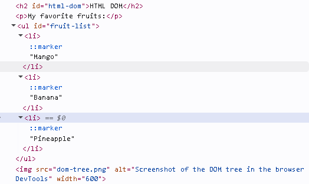

Name: Mirai E. Sato
The Web is more a social creation than a technical one.
HTML is used to build web pages.
Always add alt text to your images.
The <img> tag is used to add images.
<img>
My favorite fruits:

© 2026 Mirai E. Sato